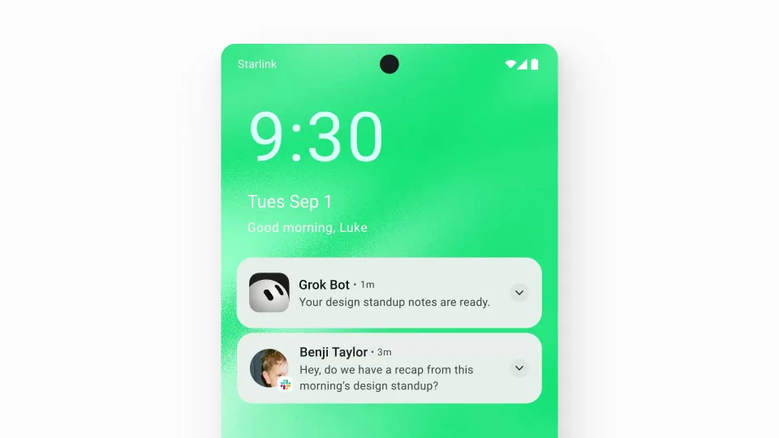
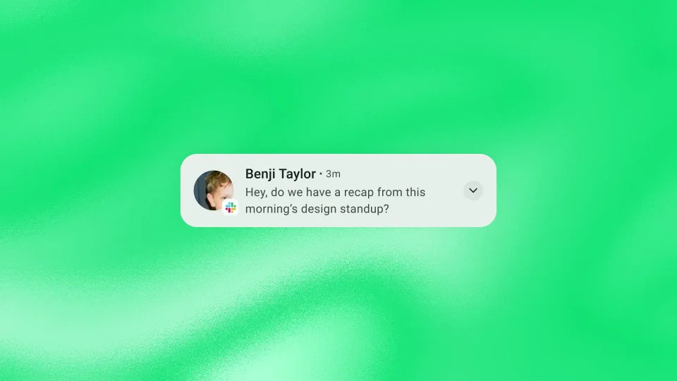
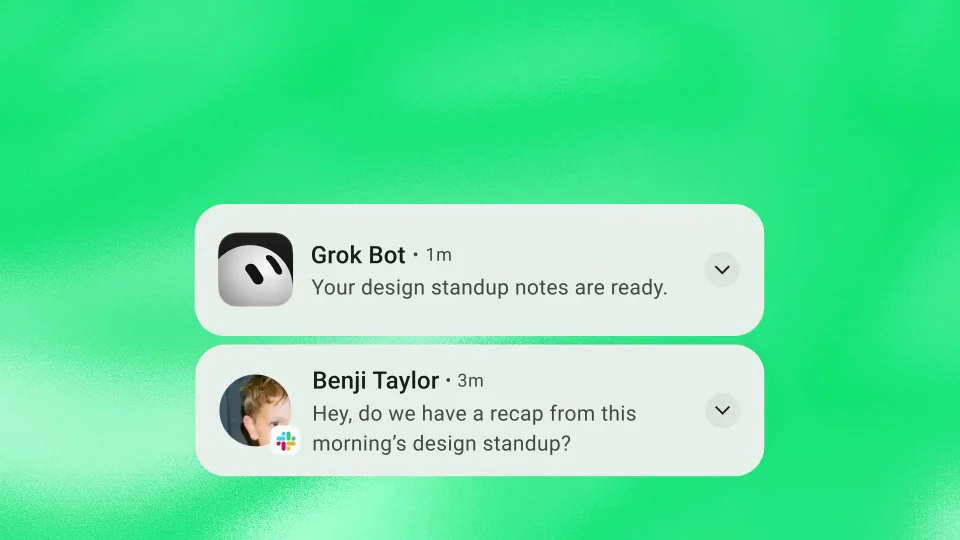
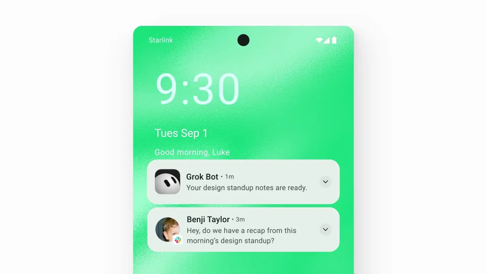
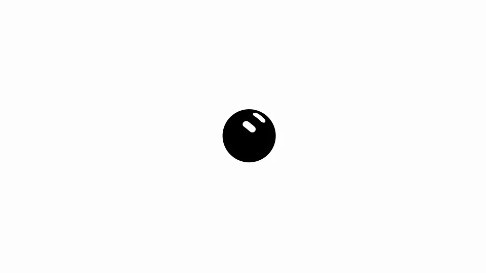

xAI / Grok / V314
Grok Bot｜Android 发布
用锁屏上的两条通知完成一次问答：人类提出请求，助手带回结果。
构图与编排 可播放 · 可替换内容
整体编排规则示例
查看 HTML 源码
<!doctype html><html lang="zh-CN"><meta charset="utf-8"><meta name="viewport" content="width=device-width,initial-scale=1"><title>Grok Bot｜Android 发布 · sequence</title><style>html,body{margin:0;width:100%;height:100%;overflow:hidden;background:#c9e6cc}canvas{display:block;width:100%;height:100%;object-fit:contain}</style><body data-mode="sequence"><canvas width="1000" height="600"></canvas><script src="data.js"></script><script src="common.js"></script><script src="scene.js"></script><script src="bridge.js"></script></body></html>画面元素手机锁屏时间请求通知结果通知发布短句
MOTION LANGUAGE
动作与构图
局部动作 · 构图规则
01
锁屏承担整个场景
浅绿背景包围手机，时间与通知层级清楚。白色通知卡使用简洁无衬线，发件人、时间和正文通过字重区分；每条正文控制在两行左右。
02
先推近请求，再出现回复
先推近请求，再出现回复规则示例
查看 HTML 源码
<!doctype html><html lang="zh-CN"><meta charset="utf-8"><meta name="viewport" content="width=device-width,initial-scale=1"><title>Grok Bot｜Android 发布 · sequence</title><style>html,body{margin:0;width:100%;height:100%;overflow:hidden;background:#c9e6cc}canvas{display:block;width:100%;height:100%;object-fit:contain}</style><body data-mode="clip" data-start="0.6" data-end="5.3"><canvas width="1000" height="600"></canvas><script src="data.js"></script><script src="common.js"></script><script src="scene.js"></script><script src="bridge.js"></script></body></html>第一条通知建立事项，第二条通知带出对应结果。镜头靠近通知帮助阅读，随后拉远回到完整手机，再切平台发布短句。
03
换成另一种系统级提醒
可换团队、任务和结果摘要，保留相同事项与先后顺序。结果通知用短句说明已经准备好的东西，品牌信息放在手机之后。
SEQUENCE
段落与节奏
点击段落，定位到上方编排示意。





画面参考 · 离散静帧
KEEP THE RELATIONSHIPS
制作其他主题
- 替换为状态提醒时保留请求→结果通知，避免凭空添加应用内页面。
- 通知摘要短于两行。
制作约束
手机锁屏 / 时间 / 请求通知 / 结果通知 / 发布短句
- 先出现人类请求，再出现助手准备好的结果，时间顺序表达回应。
- 推近通知后拉远手机，强调系统级触达。
- 把工作过程压缩为两条通知，直接对照请求和结果。